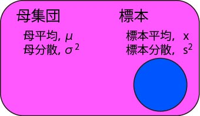
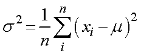

ここで，
全体の集団＝母集団
サンプルした集団＝標本
と定義して，それぞれの平均，分散を，
母平均 ： μ
母分散 ： σ2
標本平均 ：
標本分散 ： s2
として，考えていきましょう．
さて，実際の実験，調査では，全てのデータをサンプルするわけにはいきません．

ごく一部のみをサンプルして，全体の様子を調べるのです．
ここで，
全体の集団＝母集団
サンプルした集団＝標本
と定義して，それぞれの平均，分散を，
母平均 ： μ
母分散 ： σ2
標本平均 ： 
標本分散 ： s2
として，考えていきましょう．
ここで，母集団の分散の推定量は，

ですが，実際の実験で得られた分散値，s2，は，

となり，本来の推定量，σ2，より小さくなる傾向があります．
この理由と対策を考えていきましょう．